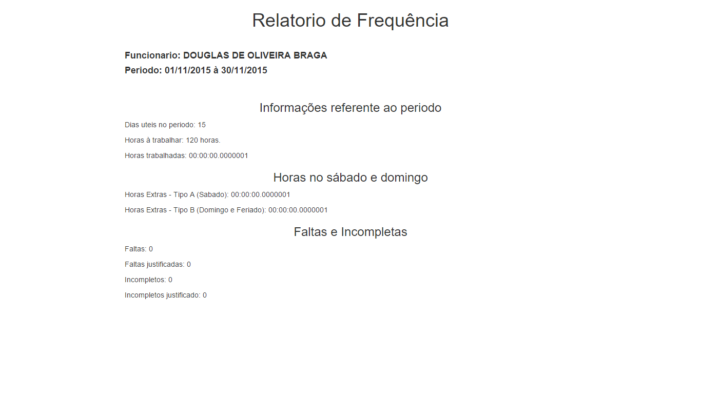

Para acessar um relatorio de frequência consulta simples, basta selecionar o funcionário e informar o período desejado e clicar no botão "Relatorio de Frequência", semelhante a uma consulta simples.
Gerando um relatorio conforme a imagem a baixo:

Created with the Personal Edition of HelpNDoc: Free EPub and documentation generator